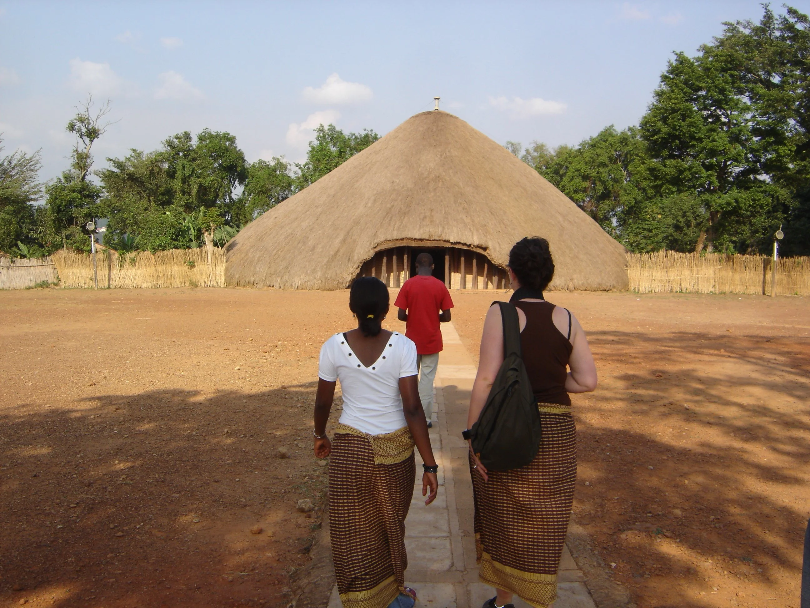

The Kasubi Tombs ask visitors to shift gears. This is not a place for rushing through with half an eye on the next stop. It is one of
the most important cultural and spiritual sites in Uganda, and its significance comes from memory, lineage, and living meaning as much
as from architecture alone.
Set on Kasubi Hill in Kampala, the site is closely tied to the kings of Buganda and to the wider story of the kingdom itself. Even
before details are explained, there is a gravity to the setting. The grounds encourage a slower, more attentive kind of travel, the
kind that listens before it interprets.
For visitors interested in understanding Uganda beyond its landscapes, the Kasubi Tombs offer something essential: a doorway into the
country's historical depth and the continuity of tradition in the present day.
More Than A Historic Landmark
It is tempting to think of the tombs purely as a heritage stop, but that framing is too narrow. Sites like Kasubi matter because they
are tied to identity and memory. They are not simply remnants of the past; they remain part of an ongoing cultural relationship.
That is why guided interpretation matters here. The stories attached to the space, the symbols within the architecture, and the customs
surrounding the site all deepen the visit. What you learn does not just fill in facts; it changes how the place feels.
Why The Buganda Story Resonates
Buganda's influence on Uganda's history and identity is profound, and Kasubi makes that influence tangible. The site helps travelers
understand monarchy, belonging, and continuity in a way that textbooks rarely can. The experience becomes less about dates and more
about the endurance of a cultural world.
Visitors often leave with a stronger appreciation for how layered Kampala is. Beneath the movement of the modern capital lie older
structures of meaning that continue to shape public life, ceremony, and memory.
How To Visit Respectfully
The best approach is simple: slow down, listen carefully, and treat the site as culturally active rather than merely scenic. A good
guide can transform the visit, so it is worth allowing enough time to absorb the stories instead of skimming the surface.
This kind of cultural stop is most rewarding when it is not squeezed between louder attractions. Give it room, and it will return far
more than a quick photograph ever could.
Why Kasubi Belongs In A Well-Rounded Uganda Journey
Travelers often arrive in Uganda thinking first of gorillas, safaris, and scenery. Those are powerful draws, but places like the Kasubi
Tombs make the country feel fuller. They reveal the histories, values, and institutions that continue to shape Uganda from within.
If you want your trip to hold more than beautiful images, Kasubi is worth your attention. It offers historical richness, cultural depth,
and a strong reminder that Uganda's story is as compelling in its heritage as it is in its landscapes.